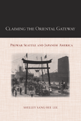

<body bgcolor="#FFFFFF" text="#000000" link="#0000FF" vlink="#CC0000" alink="#CC0000"><center><hr width="350" size="1" align="center" noshade>How the interests of Seattle and Japanese Americans were linked in the processes of urban boosterism before World War II<hr width="350" size="1" align="center" noshade><p><a href="https://cdcshoppingcart.uchicago.edu/Cart/ChicagoBook.aspx?ISBN=9781439902134&&PRESS=temple" target="_top">Buy this book!</a> | <a href="https://cdcshoppingcart.uchicago.edu/Cart/Cart.aspx?PRESS=temple" target="_top">View Cart</a> | <a href="https://cdcshoppingcart.uchicago.edu/Cart/Cart.aspx?PRESS=temple" target="_top">Check Out</a></p><p></p></center><!--none//--><h1>Claiming the Oriental Gateway</h1>
<H2>Prewar Seattle and Japanese America</H2>
<h3>Shelley Sang-Hee Lee</h3>
<P>cloth 1-4399-0213-5 $65.50, Dec 10, <FONT COLOR=#990033>Available</FONT>
<br>paper 1-4399-0214-3 $30.95, Nov 12, <FONT COLOR=#990033>Available</FONT>
<br>Electronic Book 1-4399-0215-1 $30.95 <FONT COLOR=#990033>Available</FONT>
<BR> 272 pp
6x9
18&nbsp;halftones
</P><BLOCKQUOTE><I><em>"</em>Claiming the Oriental Gateway <em>is an important contribution to the understanding of diversity of Japanese American experiences and a valuable contribution to the field of Asian American Studies, U.S. urban history, and U.S. western history."</em></I>
<BR>&mdash;<b>Karen Leong</b>, author of <em>The China Mystique: Pearl S. Buck, Anna May Wong, Mayling Soong Chiang, and the Transformation of American Orientalism.</em></I></BLOCKQUOTE>
<p>In <em>Claiming the Oriental Gateway</em>, Shelley Sang-Hee Lee explores the various intersections of urbanization, ethnic identity, and internationalism in the experience of Japanese Americans in early-twentieth-century Seattle. She examines the development and self-image of the city by documenting how U.S. expansion, Asian trans-Pacific migration, and internationalism were manifested locally—and how these forces affected residents’ relationships with one another and with their surroundings.
</p><p>
Lee details the significant role that Japanese Americans—both immigrants and U.S.-born citizens—played in the social and civic life of the city as a means of “becoming American.” Seattle embraced the idea of cosmopolitanism and boosted its role as a cultural and commercial "gateway to the Orient" as it also limited the ways in which Asian Americans could participate in the public schools, local art production, civic celebrations, and sports. Lee also looks at how Japan encouraged the notion of the "gateway" in its participation in the Alaska-Yukon-Pacific Exposition and the International Potlatch.
</p><p>
<em>Claiming the Oriental Gateway </em>is an illuminating study of the "Pacific Era" and trans-Pacific relations in the first four decades of the twentieth century.</p>
<BR>&nbsp;<h2>Excerpt</h2><P>Excerpt available at <a href="http://www.temple.edu/tempress">www.temple.edu/tempress</a></p>
<BR>&nbsp;<h2>Reviews</h2>
<p><i>"Lee has an engaging style of writing, and it is refreshing to see an in-depth study of the much-neglected Pacific Northwest, where the third-largest group of Japanese Americans lived. </i>Claiming the Oriental Gateway<i> will be of interest to students and scholars because so little has been written about the Pacific Northwest Asian American experience."</i> <br>&#151<b>Gail Nomura</b>, Associate Professor of American Ethnic Studies at the University of Washington, and coeditor of <i>Nikkei in the Pacific Northwest: Japanese Americans and Japanese Canadians in the Twentieth Century</i>
<p><i>"Lee has written a welcome contribution to the understudied history of Seattle and the Pacific Northwest while simultaneously making a valuable theoretical intervention in scholarly understandings of Japanese American ethnic identity and early twentieth century U.S. racial ideologies.... [S]tudents of urban, Asian American, and Pacific Northwest history will find much to appreciate in this thoughtful book." </i><br>&#151<b><i>Pacific Historical Review</i></b>
<p><i>"Lee’s account is engaging and original. Drawing upon a wealth of archival and interview-based sources, it extends Asian American historical understandings of the oft-ignored Pacific Northwest.... Lee’s most important contribution is to connect discussions of Japanese American ethnic identity (by historians such as David Yoo and Lon Kurashige) and Asian American transnationalism (by scholars such as Yong Chen, Madeline Hsu, Dorothy Fujita-Rony, and Eiichiro Azuma) by arguing that Japanese Americans crafted their identities, even local ones, with scrupulous attention to international configurations.... [She] argues convincingly that Japanese Americans fought for their place in the United States in part by locating themselves as part of a cosmopolitan, Pacific Rim city, and in doing so, helped to shape the city itself. Lee’s narrative of negotiations over race, nation, and space is a welcome addition to regional, urban, and Asian American historiography." </i><br>&#151<b><i>American Historical Review</i></b>
<p><i>"[Lee] does a commendable job of describing the Nikkei community’s role in the history of Seattle. She provides a vivid description of Jackson Street—identified as the Skid Row of Seattle—and the location of Seattle’s Nikkei community. Yet Lee shows the dynamism of this working-class neighborhood— poor yet prosperous, multiethnic, and vibrant....Lee documents how Seattle’s Nikkei negotiated their lives in productive and self-affirming ways that benefited themselves and their community while contributing to the overall growth and development of the city."</i><br>&#151<b> <i>Western Historical Quarterly</i></b>
<p><i>"Groundbreaking.... The main strength of this study is its illumination of the challenges Japanese Americans faced as they tried to engage with claims of cosmopolitanism as well as with racism.... The book benefits from Lee's use of new and lesser-known archival material, her original argument, and her compelling writing style. </i>Claiming the Oriental Gateway<i> is an important scholarly contribution to twentieth-century American history and Asian American history in particular."</i><br>&#151<b> <i>The Journal of American History</i></b>
<p><i>"[A]n engaging and well-researched study of how life in the international 'ghetto' of Seattle's Jackson Street neighborhood reflected the racial dynamics of Pacific Rim geopolitics in the years prior to World War II.... [T]his book is a treasure. Lee superbly evokes the consciousness of both a place and an entire era."</i> <br>&#151<b><i>Pacific Northwest Quarterly</i></b>
<p><i>"</i>Claiming the Oriental Gateway<i> is a book worth reading. It is as much an exercise in international history as it is in ethnic studies. Many authors these days talk about connecting the global with the local, but few achieve it. Shelly Lee is one who does. This is a detailed study of Seattle’s Japanese American community from the dawn of the twentieth century to the 1940s....Lee excels in showing the Japanese American community’s independent development, in interplay with Chinese and Filipinos, but also with whites and blacks. She helps us see the life patterns of individuals and of neighborhoods even as she keeps the transpacific dimension clearly in view.... This is careful scholarship, original, richly researched in a large number of archives, fully conversant with the secondary literature, carefully assembled into a coherent narrative, and smoothly written. As usual, Temple University Press’s Asian American History and Culture series has produced a book that is as attractive physically as it is intellectually. The press, the series editors, and Professor Lee are all to be congratulated."</i> <br>&#151<b><i>Journal of American Ethnic History </i></b>
<BR>&nbsp;<h2>Contents</h2><P>
<p>Acknowledgments
<br>Introduction
<br>1. Multiethnic Seattle
<br>2. Making Seattle “Cosmopolitan”
<br>3. Making Local Images for International Eyes: Race, Nationality, and the Seattle Camera Club, 1924-1929
<br>4. “Problems of the Pacific” in “the Great Crucible of America”: Public Schools in the 1920s and the 1930s
<br>5. “That Splendid Medium of Free Play”: Japanese American Sports during the Interwar Years
<br>6. The Eve of War
<br>Epilogue
<br>Notes
<br>Selected Bibliography
<br>Index
</P><BR>&nbsp;<H2>About the Author(s)</H2>
<table><tr><td valign="top"><img src="/tempress/authors/2075_au1.gif" height="90" width="75"></td><td width="100%" valign="middle"><p><b>Shelley Sang-Hee Lee</b> is an Associate Professor of Comparative American Studies and History at Oberlin College.</P></td></tr></table>
<BR><H2>Subject Categories</H2>
<p><A HREF="/tempress/history.html" TARGET="_top">History</a>
<BR><A HREF="/tempress/asian_amer.html" TARGET="_top">Asian American Studies</a>
<BR><A HREF="/tempress/urban.html" TARGET="_top">Urban Studies</a>
</p>
<BR><h2 class="inpageheading">In the series</H2>
<P><I><a href="http://www.temple.edu/tempress/asam_history.html" onMouseOver="window.status='Click for other books in this series!'; return true;" onMouseOut="window.status=''; return true;" target="_top">Asian American History and Culture</a></i>, edited by K. Scott Wong, Linda Trinh Võ, and Cathy Schlund-Vials.
</p><p>Founded by Sucheng Chan in 1991, the <I>Asian American History and Culture</I>, series has sponsored innovative scholarship that has redefined, expanded, and advanced the field of Asian American studies while strengthening its links to related areas of scholarly inquiry and engaged critique. Like the field from which it emerged, the series remains rooted in the social sciences and humanities, encompassing multiple regions, formations, communities, and identities. Extending the vision of founding editor Sucheng Chan and emeriti editor Michael Omi and David Palumbo-Liu, series editors K. Scott Wong, Linda Trinh Võ, and Cathy Schlund-Vials continue to develop a foundational collection that embodies a range of theoretical and methodological approaches to Asian American studies.</p>
<p align="center"><a href="https://cdcshoppingcart.uchicago.edu/Cart/ChicagoBook.aspx?ISBN=9781439902134&&PRESS=temple" target="_top">Buy this book!</a> | <a href="https://cdcshoppingcart.uchicago.edu/Cart/Cart.aspx?PRESS=temple" target="_top">View Cart</a> | <a href="https://cdcshoppingcart.uchicago.edu/Cart/Cart.aspx?PRESS=temple" target="_top">Check Out</a></p><p><font face="Arial" size="1"><a href="copyright.html" onMouseOver="window.status='Web Copyright Policy';return true;" onMouseOut="window.status=''" title="Web Copyright Policy">&copy;</a> 2015 <a href="http://www.temple.edu" target="new" onMouseOver="window.status='Link to Temple University home page';return true;" onMouseOut="window.status=''" title="Link to Temple University home page">Temple University</a>. All Rights Reserved. http://www.temple.edu/tempress/titles/2075_reg.html</font></p>